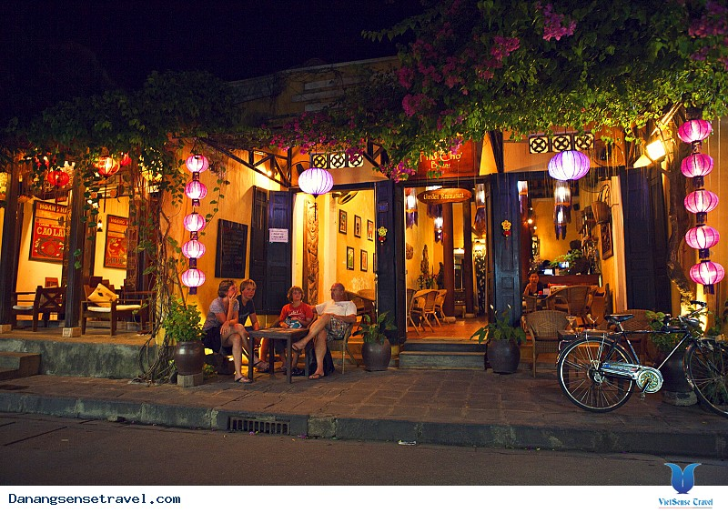

Hội An là một thành phố thuộc tỉnh Quảng Nam có nhiều khu phố cổ được xây từ thế kỷ 16 và vẫn còn tồn tại gần như nguyên vẹn đến nay. Trong các tài liệu cổ của phương Tây, Hội An được gọi Faifo. Phố cổ Hội An được công nhận là một di sản thế giới UNESCO từ năm 1999. Đây là địa điểm thu hút được rất nhiều khách Du Lịch Đà Nẵng - Hội An..
Ẩm thực đặc sản
Tin tức trong ngày
Khách sạn resort